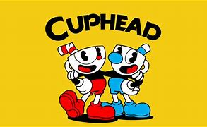
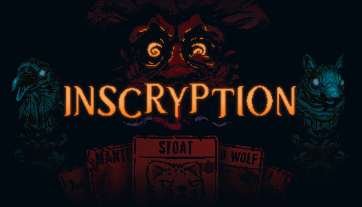
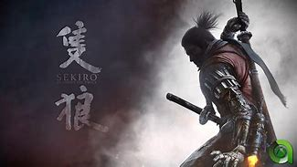

Counter-Strike 2
Counter strike surgiu no ano de 2000, onde foi lançado o CS 1.6. O jogo foi um sucesso e, 12 anos depois, foi atualizado para o CS:GO e agora para CS 2. É uma ótima opção para quem deseja entrar no mundo de FPS competitivo. O jogo está grauito na Steam, e só é encontrado em PCs.
Valorant
Valorant é um pouco mais recente que o icônico Counter-Strike. Surgiu em 2020 e tem algumas diferenças em relação ao CS. Nesse jogo você pode escolher entre vários personagens diferentes, cada um com variadas habilidades especias. Isso torna o jogo dinâmico e, embora um pouco confuso no início, não deixa de ser divertido. O jogo está em todas as plataformas principais, exceto Steam, além de estar gratuito onde se encontra.
Wolfenstein: The New Order
Wolfenstein: The New Order se passa na Europa, em uma sociedade distópica onde a Alemanha venceu a segunda guerra. Você é b.J Blazkowicz, um soldado norte americano que deve liderar uma resistência afim de derrubar a os nazistas. Além disso, a franquia possui mais 4 jogos que seguem a história de alta qualidade. O jogo está disponível na Steam por R$39,99, mas se encontra em todas as plataformas principais.
Call of Duty: Black Ops 2
A história de Call of Duty: Black Ops 2 se passa durante o final da guerra fria. O jogo apresenta vários modos, como a campanha que apresenta a história mencionada, ou o modo zombies, onde voce deve sobreviver pelo máximo de tempo possível com ondas de zumbis cada vez mais fortes tentando te matar. É possivel encontrá-lo na Steam por R$ 295,00, e também em todas as plataformas principais.
Doom Eternal
Em Doom Eternal, você controla Doom Slayer, o matador de demônios e protagonista de toda esta clássica série de FPSs Boomer Shooters. Nesse jogo, sua missão é impedir que a terra seja absorvida pelo inferno, ao derrotar a alien Khan Mayrk. Ele está disponível na Steam por R$197,00, mas presente em todas as plataformas principais.
Hollow Knight

Hollow Kinght é um jogo de ação e aventura sobre um pequeno guerreiro explorando o reino subterrâneo de Hallownest, encontrando vários inimigos desafiadores e adquirindo várias habilidades, como dash e wall jump, no processo. Ele possui diversas DLCs gratuitas, cada uma com uma temática e inimigos diferentes. O jogo está disponível na Steam por R$46,99, e está presente em todas as plataformas principais.
Blasphemous
Blasphemous é um jogo que envolve um combate desafiador, com grandes inspirações em Souslikes, além de uma atmosfera de horror católico, narrando a história do Penitente tentando libertar a terra de Cvstodia. Pode ser encontrado na Steam por R$33,47, mas está disponível em todas as plataformas principais.
Ori and the Will of the Wisps
Ori and the Will of the Wisps é um jogo que narra a história de um pequeno espírito guardião chamado Ori, em uma jornada mágica em busca de seu amigo perdido. Ele está na Steam por R$129,00, mas presente em todas as plataformas principais, exceto Playstation.
Bloodstained: Ritual of the Night
Bloodstained: Ritual of the Night narra a história de Miriam, uma órfã amaldiçoada, em busca de salvar a si mesma e a humanidade de um mal maior. O jogo está disponível na Steam por R$71,18, mas se encontra em todas as plataformas principais.
Ender Lilies: Quietus of the Knights
Ender Lilies: Quietus of the Knights narra a história de Lily, uma jovem sacerdotisa que acorda em um mundo pós apocalíptico em que uma chuva transformou todos os humanos em mortos vivos, entrando em combates, explorando e descobrindo a história do mundo em que ela se encontra. Ele está presente na Steam pelo valor de R$49,49, mas disponível em todas as plataformas principais.
Celeste
Celeste narra a historia de uma garota chamada Madeline, cujo objetivo é escalar a Montanha Celeste, enquanto enfrenta seus demônios internos e faz novas amizades ao longo do caminho, além de adquirir novas habilidades, como dash e pulo duplo. Na Steam, o jogo está disponível por R$59,99, mas está presente em todas as plataformas.
Cuphead
Cuphead é um jogo de combate 2d que conta a cômica história de dois irmãos xícaras que perderam uma aposta contra o Diabo e que, para não terem suas almas tomadas pelo próprio, precisam derrotar vários chefes desafiadores, afim de coletar suas almas e entregá-las ao Diabo, utilizando variadas mecânicas, como parry e dash. O jogo está disponível na Steam por R$36,99 e conta com uma DLC pelo preço de R$19,95 também na Steam, mas ambas estão disponíveis em todas as plataformas principais.
Shovel Knight: Treasure Trove
Shovel Knight: Treasure Trove é um dos jogos da icônica saga de Videogames Shovel Knight, pioneira no gênero de plataforma, que narra a história do Shovel Knight, armado com sua pá em busca de resgatar sua amada e salvar o mundo de vilões. Se encontra pelo valor de R$75,49 na Steam, porém está em todas as plataformas principais.
Inside
Inside narra a historia de um garoto sem nome em busca de escapar de uma sociedade distópica, dominada por mistério e experimentos maléficos, com mecânicas que envolvem muito timing e precisão. O jogo custa aproximadamente R$7,40 na Steam,mas se encontra em todas as plataformas principais.
Crash Bandicoot N' Sane Trilogy
Crash Bandicoot N' Sane Trilogy é um remake feito pela Activision da trilogia clássica da desenvolvedora Naughty Dog para Playstation 1 e 2, que narra a história do marsupial Crash contra seu maléfico arqui-inimigo Neo Cortex e seus assistentes. A trilogia se encontra na Steam por R$184,00, mas está em todas as plataformas principais.
Cocoon
Cocoon é um jogo de puzzle de 2023, ganhador de Melhor Jogo Debut Indie no The Game Awards. Nele, você controla um pequeno inseto andando por diferentes mundos e resolvendo engimas. O jogo possui puzzles de dificuldade equilibrada, alguns mais difíceis, outros mais fáceis, dinamizando a jogabilidade! Ele está disponível na Steam por R$67,99 e se encontra em todas as plataformas principais.
Limbo
Limbo foi o primeiro jogo de sucesso da desenvolvedora Playdead, a mesma de Inside. Nele, você controla um garoto por um mundo sombrio, resolvendo engimas de plataforma e fugindo de monstros assustadores. Na Steam, está pelo preço de R$3,70, mas está presente em todas as principais plataformas.
Superliminal
Com um conceito inovador, Superliminal é um elogiadíssimo jogo de Puzzle de 2019. Sua jogabilidade se baseia em analisar os objetos e paisagens por diferentes perspectivas, afim de avançar na história e descobrir o que aconteceu de errado com o experimento que em você estava sendo feito. Está disponível em todas as plataformas principais, mas na Steam está pelo valor de R$59,99.
A Little To The Left
A Little To The Left é um jogo relaxante e belo de puzzle, que se baseia principalmente em organização de itens em variados ambientes para concluir as fases, separadas em capítulos. Com três DLCs de alta qualidade e temas diferentes do jogo base, está disponível na Steam por R$42,99, e suas DLCs por R$29,99 e R$16,99, mas está em todas as plataformas principais.
Enter The Gungeon
Enter The Gungeon é um dos melhores de seu gênero. Com chefes únicos e desafiadores e salas dominadas por um bullet hell, sua gameplay e mapa se baseiam em andares, pelos quais o jogador vai descendo e adentrando no Balabirinto cada vez mais. O jogo está disponível na Steam por R$46,99, mas se encontra em todas as plataformas principais.
Dead Cells
Com um combate desafiador e extremamente marcante para qualquer um que jogue, Dead Cells é, possivelmente, um dos jogos mais viciantes apresentados aqui. A imensa variedade de armas e seus tipos, inimigos, mutações, estilos de jogo e caminhos para tomar até o chefe final, torna toda run única. E embora não possua história praticamente nenhuma, sua gameplay compensa e muito com tamanha qualidade! Ele está presente na Steam por R$23,74, e também em todas as plataformas principais.
Slay The Spire
Slay The Spire é o já icônico e renomado jogo de cartas que inspirou tantas outras aclamadas obras. Mesmo sendo um pouco frustrante por não haver quase evolução nenhuma de uma run para outra, ele consegue te motivar a tentar mais uma vez, após ter aprendido algo novo e ganhado experiência na última tentativa! Com certeza é um jogo indispensável para qualquer amante de jogos de turno. É encontrado na Steam pelo valor de R$25,49, mas está presente em todas as plataformas principais.
Hades
Provavelmente o roguelite que mais furou a bolha desse gênero, que é, inegavelmente, bem nichado. Assim como Baldur's Gate III fez com RPGs de turno, ou Elden Ring fez com Souslikes, Hades é amado até por quem não gosta desse estilo de jogo! Com uma história lindíssima e completa e uma gameplay extremamente viciante de hack 'n' slash em variados ambientes, esse jogo tem um belo motivo para ser um dos mais populares roguelites. Hades está presente na Steam pelo valor de R$73,99, e em todas as plataformas principais.
Inscryption
Inscryption é uma produção de 2021 extremamente misteriosa e macabra. Com uma atmosfera sombria, consiste num jogo de cartas por contra um desconhecido personagem, e uma história única, num ambiente bizarro. Na Steam, se encontra por R$49,99, mas está disponível em todas as plataformas principais.
Elden Ring
Elden Ring é um Soulsborne com belos gráficos, muito conteúdo e uma história excelente. Desbrave as terras intermédias explorando castelos, dungeons, enfrente bosses, dragões e se divirta com mais de 100 horas de conteúdo. O jogo está disponível na Steam por R$229, além de possuir uma DLC.
Trilogia Dark Souls
A trilogia Dark Souls é composta por Dark Souls 1, 2 e 3, cada jogo possui vários bosses e uma história muito interessante, além de muito conteúdo para explorar. Entretanto, diferente de Elden Ring, esses jogos são apenas semi-mundo aberto, então terá que seguir um caminho pré-determinado, nem sempre podendo explorar livremente. Os três jogos estão diponíveis na Steam por R$557 mas é possível comprá-los separadamente, em todas as plataformas principais.
Sekiro: Shadows Dies Twice
Sekiro se passa em um mundo de fantasia no japão antigo onde você é um shinobi que quer vingança. O jogo tem um foco em furtividade e exploração, mas tem um combate excelente e muitos bosses. Ele esta diponível na Steam por R$274, mas pode ser encontrado em todas as plataformas principais.
Bloodborne

Bloodborne se passa em Yharnam, uma cidade que foi infectada por uma doença e transformou os cidadãos em bestas, e você tem que sobreviver a elas. O combate é parecido com o de Dark Souls, porém um pouco mais rápido. Ele está disponível apenas para playstation 4, por, aproximadamente, R$130,00.